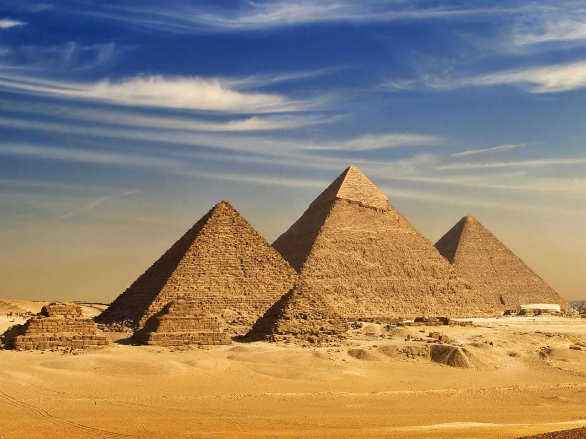

THE ANCIENT LANDMARKS

THE PYRAMIDS
"The pyramids in Egypt stand as symbols of ancient civilization's engineering and cultural excellence. Built as tombs for pharaohs in ancient times, the pyramids showcase dedication and skill in construction. The Great Pyramid, or Khufu's Pyramid, stands out with its monumental height and precise architecture. The pharaohs utilized massive stones and advanced building techniques, continuing to astound scientists to this day. These colossal structures reflect the ancient Egyptian civilization's belief in eternal life, serving as indispensable landmarks that embody a heritage transcending through the ages."

SPHINX
"The Great Sphinx of Giza, commonly known as the Sphinx, is a colossal limestone statue with the head of a pharaoh and the body of a lion. Standing guard on the Giza Plateau, near the pyramids, it is an iconic symbol of ancient Egypt. Believed to represent the Pharaoh Khafre, its mysterious aura has captivated scholars and tourists for centuries. Carved with precision and adorned with tales of royal power, the Sphinx continues to inspire awe and speculation about its purpose and significance in the rich tapestry of Egyptian history and mythology."
THE KARNAK TEMPLE
"The Karnak Temple in Luxor, a cultural gem in the heart of ancient Egypt. This colossal temple stands as a symbolic landmark for worship and architectural artistry. Built over several eras, it shines with the splendor of its decorated columns. Devoted to multiple deities, including Amun and Mut, it witnessed successive renovations. Marked by massive pylons and intricate wall carvings depicting the stories of pharaohs and gods, the Karnak Temple, with its sanctuary and magnificent halls, offers visitors a profound insight into the beliefs and civilization of ancient Egypt."
THE VALLEY OF THE KINGS
"The Valley of the Kings in the west of Luxor, an Egyptian burial ground that testifies to the splendor of the Egyptian civilization. This valley houses the tombs of pharaohs, including the renowned tomb of King Tutankhamun, discovered with its treasures intact. The tombs feature colorful wall paintings depicting the stories of the afterlife and the gods. With its royal entrances and narrow passages, the valley stands as a majestic place, transporting visitors to the realm of the deceased. The Valley of the Kings serves as a witness to advanced burial techniques and royal grandeur from the ancient eras."
THE LUXOR TEMPLE
"The Luxor Temple, a cultural masterpiece nestled in the heart of ancient Egypt. This grand temple, dedicated to the gods Amun, Mut, and Khonsu, stands as a symbol of worship and architectural prowess. Constructed over various epochs, it showcases the evolution of Egyptian artistry and religious beliefs. Adorned with colossal statues, towering obelisks, and intricately carved walls, the Luxor Temple offers a captivating journey through millennia of history. Its grandeur is heightened by an illuminated spectacle during the annual Opet Festival. Visiting this sacred site provides a profound connection to the spiritual and cultural legacy of ancient Egypt."
HORUS TEMPLE
"The Temple of Horus in Edfu stands as a majestic testament to ancient Egyptian architecture and religious devotion. Dedicated to the falcon-headed god Horus, it represents one of the best-preserved temples from the Ptolemaic period. The grand entrance, adorned with intricate carvings, leads to a series of impressive halls and chambers. The towering pylons and colossal statues of Horus showcase the might and artistic finesse of ancient builders. This sacred site not only honors Horus but also serves as a living testament to the cultural and spiritual significance embedded in the heart of ancient Egyptian civilization."
PHILAE TEMPLE
"The Temple of Philae, an enchanting sanctuary nestled on Agilkia Island in the Nile River. Dedicated to the goddess Isis, this ancient Egyptian temple was relocated during the construction of the High Dam to preserve its magnificence. Philae boasts captivating structures, including the breathtaking Kiosk of Trajan and the imposing Temple of Isis. Adorned with intricate carvings and hieroglyphs, the temple narrates the mythological tales of Isis and Osiris. Visitors are transported through time as they explore the sacred precincts, revealing the deep reverence the ancient Egyptians held for the divine and their exceptional architectural skills."